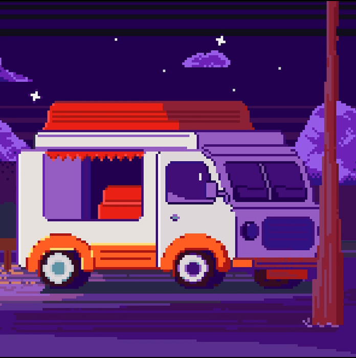
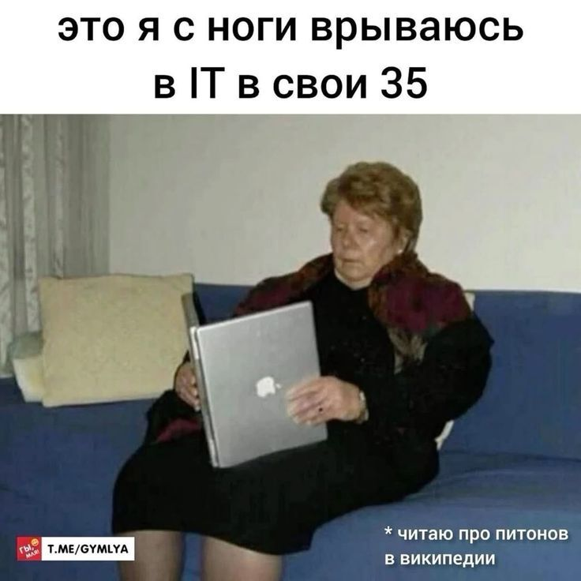

Фритрек и нулевой спринт: Подготовка к работе

</HTML>Это было самое начало пути. На этом этапе важно было проникнуться основами и настроиться на учёбу. И, возможно, подумать, как новые знания могут повлиять на ваше будущее.
Несколько лет я думала о том, что хочу быть айтишником. Было много сомнений, но навязчивые мысли взяли вверх и одним днем я оплатила курсы, сразу же почувствовав себя очень крутой... Меня очень мотивировала концепция работать из любой точки, не быть привязанной к одному месту. К тому же, какое это удовольствие - видеть, как из цифр, символов рождается что-то красивое (и может даже функциональное) !
